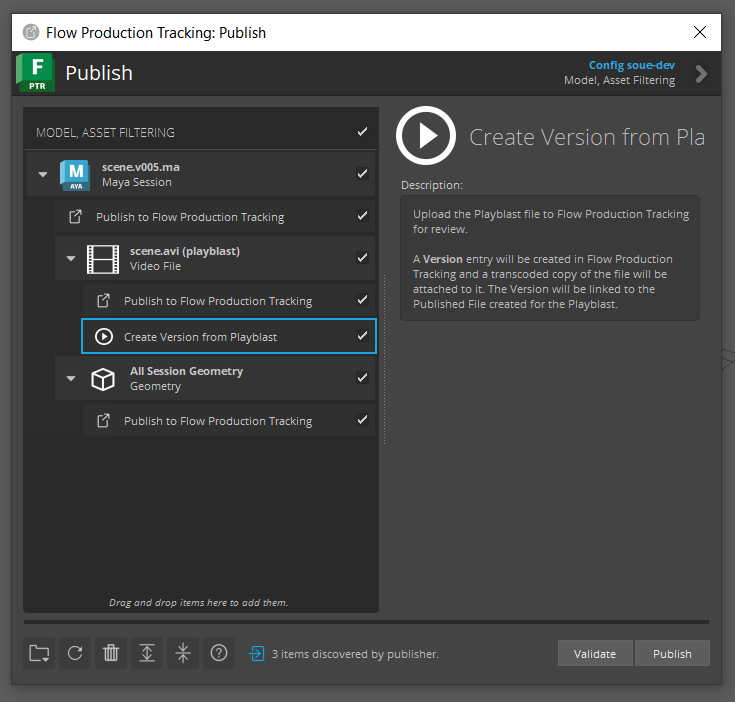
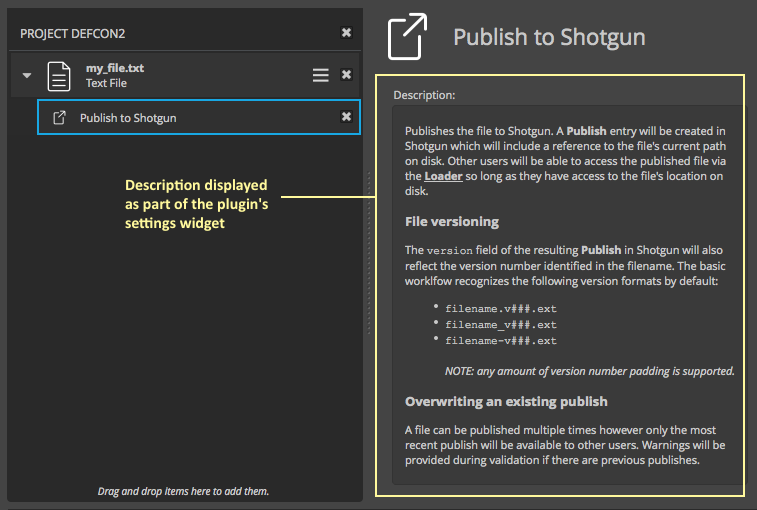

Publish Customization
The sections below identify the entry points for customizing publish workflows. For a broad overview of how publish execution works, see the Publish Execution doc.
Collector Hook
The collector hook handles processing the current user’s session to identify what will be published. It also handles processing any file paths that have been dragged/dropped onto the Publisher or added manually via the Publish API. Once the collector identifies what is to be published, Publish Item instances are created within the tree and presented to the user.
Note
For more information on how to take over, subclass, and manage hooks, see the Hooks documentation.
Collector Hook API
- class tk_multi_publish2.base_hooks.CollectorPlugin(parent)[source]
Bases:
HookThis class defines the required interface for a collector plugin. Collectors are used to gather individual files that are loaded via the file browser or dragged and dropped into the Publish2 UI. It is also used to gather items to be published within the current DCC session.
- property id
Unique string identifying this plugin.
- property settings
A
dictdefining the configuration interface for this collector.The values configured for the collector will be supplied via settings parameter in the
process_current_session()andprocess_file()methods.The dictionary can include any number of settings required by the collector, and takes the form:
{ <setting_name>: { "type": <type>, "default": <default>, "description": <description> }, <setting_name>: { "type": <type>, "default": <default>, "description": <description> }, ... }
The keys in the dictionary represent the names of the settings. The values are a dictionary comprised of 3 additional key/value pairs.
type: The type of the setting. This should correspond to one of the data types that toolkit accepts for app and engine settings such ashook,template,string, etc.default: The default value for the settings. This can beNone.description: A description of the setting as a string.
Example implementation:
@property def settings(self): return { "Work Template": { "type": "template", "default": None, "description": "A work file template required by this collector." }, "Exclude Objects": { "type": "list", "default": ["obj1", "obj2", "obj3"], "description": "A list of objects to ignore." } }
The settings are exposed via the
collector_settingssetting in the app’s configuration. Example:collector_settings: Work Template: my_work_template Exclude Objects: [obj1, obj4]
Note
See the hooks defined in the publisher app’s
hooks/folder for additional example implementations.
- process_current_session(settings, parent_item)[source]
This method analyzes the current engine session and creates a hierarchy of items for publishing.
A typical implementation of this method would create an item that represents the current session (e.g. the current Maya file) or all open documents in a multi-document scenario (such as Photoshop). Top level items area created as children of the supplied
parent_item(a PublishItem instance).Any additional items, specific to the current session, can then be created as children of the session item. This is not a requirement however. You could, for example, create a flat list of items, all sharing the same parent.
The image below shows a Maya scene item with a child item that represents a playblast to be published. Each of these items has one or more publish tasks attached to them.

The
settingsargument is a dictionary where the keys are the names of the settings defined by thesettings()property and the values are PluginSetting instances as configured for this instance of the publish app.To create items within this method, use the
create_item()method available on the suppliedparent_item.Example Maya implementation:
def process_current_session(settings, parent_item): path = cmds.file(query=True, sn=True) session_item = parent_item.create_item( "maya.session", "Maya Session", os.path.basename(path) ) # additional work here to prep the session item such as defining # an icon, populating the properties dictionary, etc. session_item.properties["path"] = path # collect additional file types, parented under the session self._collect_geometry(settings, session_item)
Note
See the hooks defined in the publisher app’s
hooks/folder for additional example implementations.- Parameters:
settings (dict) – A dictionary of configured PluginSetting objects for this collector.
parent_item – The root PublishItem instance to collect child items for.
- process_file(settings, parent_item, path)[source]
This method creates one or more items to publish for the supplied file path.
The image below shows a collected text file item to be published.

A typical implementation of this method involves processing the supplied path to determine what type of file it is and how to display it before creating the item to publish.
The
settingsargument is a dictionary where the keys are the names of the settings defined by thesettings()property and the values are PluginSetting instances as configured for this instance of the publish app.To create items within this method, use the
create_item()method available on the suppliedparent_item.Example implementation:
def process_file(settings, parent_item): # make sure the path is normalized. no trailing separator, # separators are appropriate for the current os, no double # separators, etc. path = sgtk.util.ShotgunPath.normalize(path) # do some processing of the file to determine its type, and how # to display it. ... # create and populate the item file_item = parent_item.create_item( item_type, type_display, os.path.basename(path) ) # additional work here to prep the session item such as defining # an icon, populating the properties dictionary, etc. session_item.properties["path"] = path
Note
See the hooks defined in the publisher app’s
hooks/folder for additional example implementations.- Parameters:
settings (dict) – A dictionary of configured PluginSetting objects for this collector.
parent_item – The root PublishItem instance to collect child items for.
Publish Plugin
Publish plugins are hooks that handle processing of collected publish items. After all items have been collected, the Publisher attempts to match the items with the appropriate publish plugins. All matched plugins show up as child tasks within the publish item hierarchy.
With v2.0.0 of the publisher and higher, each plugin can define a custom UI
that allows users to make changes to the publish settings prior to publishing.
See the methods and properties section below for details on how to implement a
custom publish plugin UI.
Note
For more information on how to take over, subclass, and manage hooks, see the Hooks documentation.
Step-by-Step Tutorials
Listed below are step-by-step tutorials to help you customize your publish workflows using publish plugins. See Publish API reference for more technical details of the Publish Plugin.
Create a Publish Plugin
This tutorial will guide you through the process of creating a new publish plugin to create a new Version in Flow Production Tracking from a Playblast file in Maya, and customizing your Toolkit configuration to use this new plugin. This tutorial will focus on creating and setting up a new publish plugin, and less about the specifics of Playblasts in Maya (it does not require extensive knowledge of Maya or Playblasts, only if you want to test out this change you would need to know how to create a Playblast in Maya). If you are interested in creating a new publih plugin for another DCC, you can still follow this tutorial, but you will need to add the configuration settings under the appropriate DCC in your Toolkit configuration.
Before you begin, you will need to have the following:
A local copy of your Toolkit configuration
The configuration must be based off the tk-config-default2 configuration
1. Add a new publish plugin setting to your configuration.
We need to add a new setting to the tk-multi-publish2 app configuration in
order to use our new publish plugin. We will modify the
tk-config-default2/env/includes/settings/tk-multi-publish2.yml file to add a
new entry under the settings.tk-multi-publish2.maya.asset_step publish_plugins
list called “Create Version from Playblast”:
# ---- Maya
# asset step
settings.tk-multi-publish2.maya.asset_step:
collector: "{self}/collector.py:{engine}/tk-multi-publish2/basic/collector.py"
collector_settings:
Work Template: maya_asset_work
publish_plugins:
- name: Publish to Flow Production Tracking
hook: "{self}/publish_file.py"
settings: {}
- name: Upload for review
hook: "{self}/upload_version.py"
settings: {}
- name: Begin file versioning
hook: "{engine}/tk-multi-publish2/basic/start_version_control.py"
settings: {}
- name: Publish to Flow Production Tracking
hook: "{self}/publish_file.py:{engine}/tk-multi-publish2/basic/publish_session.py"
settings:
Publish Template: maya_asset_publish
- name: Publish to Flow Production Tracking
hook: "{self}/publish_file.py:{engine}/tk-multi-publish2/basic/publish_session_geometry.py"
settings:
Publish Template: asset_alembic_cache
- name: Create Version from Playblast
hook: "{self}/upload_version.py:{config}/tk-multi-publish2/basic/upload_version_playblast.py"
settings: {}
help_url: *help_url
location: "@apps.tk-multi-publish2.location"
This is the new entry we added to the configuration:
- name: Create Version from Playblast
hook: "{self}/upload_version.py:{config}/tk-multi-publish2/basic/upload_version_playblast.py"
settings: {}
The publish plugin will have the name “Create Version from Playblast” and will
use the publish plugin defined by the hook
tk-config-default2/hooks/tk-multi-publish2/upload_version_playblast.py. The
{config} token will be resolved to the path of your Toolkit configuration.
The publish plugin will have the base class of the publish plugin defined in the
tk-multi-publish2 App tk-multi-publish2/hooks//upload_version.py. The
{self} token will be resolved to the path of the tk-multi-publish2 App.
2. Create the new publish plugin file.
From Step 1, we defined a new publish plugin file in the configuration at the
location tk-config-default2/hooks/tk-multi-publish2 and named
upload_version_playblast.py. So we will now need to create that file, below
is the implementaiton of the new publish plugin file:
import sgtk
HookBaseClass = sgtk.get_hook_baseclass()
class MayaUploadVersionPlayblastPlugin(HookBaseClass):
"""Plugin for sending Playblasts to Flow Production Tracking for review."""
@property
def description(self):
"""
Verbose, multi-line description of what the plugin does. This can
contain simple html for formatting.
"""
return """
Upload the Playblast file to Flow Production Tracking for review.<br><br>
A <b>Version</b> entry will be created in Flow Production Tracking and
a transcoded copy of the file will be attached to it. The Version will be
linked to the Published File created for the Playblast.
"""
@property
def settings(self):
"""
Dictionary defining the settings that this plugin expects to recieve
through the settings parameter in the accept, validate, publish and
finalize methods.
A dictionary on the following form::
{
"Settings Name": {
"type": "settings_type",
"default": "default_value",
"description": "One line description of the setting"
}
The type string should be one of the data types that toolkit accepts as
part of its environment configuration.
"""
return {
"Upload": {
"type": "bool",
"default": True,
"description": "Upload content to Flow Production Tracking?",
},
"Link Local File": {
"type": "bool",
"default": True,
"description": "Should the local file be referenced by Flow Production Tracking",
},
}
@property
def item_filters(self):
"""
List of item types that this plugin is interested in.
Only items matching entries in this list will be presented to the
accept() method. Strings can contain glob patters such as *, for example
["maya.*", "file.maya"]
"""
return ["file.video"]
def accept(self, settings, item):
"""
Method called by the publisher to determine if an item is of any
interest to this plugin. Only items matching the filters defined via the
item_filters property will be presented to this method.
A publish task will be generated for each item accepted here. Returns a
dictionary with the following booleans:
- accepted: Indicates if the plugin is interested in this value at
all. Required.
- enabled: If True, the plugin will be enabled in the UI, otherwise
it will be disabled. Optional, True by default.
- visible: If True, the plugin will be visible in the UI, otherwise
it will be hidden. Optional, True by default.
- checked: If True, the plugin will be checked in the UI, otherwise
it will be unchecked. Optional, True by default.
:param settings: Dictionary of Settings. The keys are strings, matching
the keys returned in the settings property. The values are `Setting`
instances.
:param item: Item to process
:returns: dictionary with boolean keys accepted, required and enabled
"""
return {"accepted": True}
def validate(self, settings, item):
"""
Validates the given item to check that it is ok to publish.
Returns a boolean to indicate validity.
:param settings: Dictionary of Settings. The keys are strings, matching
the keys returned in the settings property. The values are `Setting`
instances.
:param item: Item to process
:returns: True if item is valid, False otherwise.
"""
path = item.get_property("path")
if not path:
self.logger.error("Missing Playblast file path.")
return False
return True
def publish(self, settings, item):
"""
Executes the publish logic for the given item and settings.
:param settings: Dictionary of Settings. The keys are strings, matching
the keys returned in the settings property. The values are `Setting`
instances.
:param item: Item to process
"""
# Set the publish name property for the UploadVersionPlugin to consume
item.properties["publish_name"] = item.get_property("sg_publish_data", {}).get("name")
super(MayaUploadVersionPlayblastPlugin, self).publish(settings, item)
Breaking down this publish plugin:
The
descriptionproperty provides a verbose description of what the plugin does. This description will be displayed in the UI when the plugin is selected.The
settingsproperty defines the settings that the plugin expects to receive. The settings are used to help guide the publish plugin execution.The
item_filtersproperty defines the item types that the plugin is interested in. Only items matching the filters defined here will be presented to the plugin. For example, we know that Playblast files are video files, so we set the item filter tofile.video.The
acceptmethod is called by the publisher to determine if an item is of interest to the plugin. A plugin will only show up in the publisher if it is accepted.The
validatemethod validates the item to check if it is ok to publish. A publish plugin will not execute its publish method if it is does not pass the validation.The
publishmethod executes the publish logic for the given item and settings. In our case, the publish method will create a new Version in Flow Production Tracking and attach the Playblast file to it.
See the Publish API reference for more information on how to extend the MayaUploadVersionPlayblastPlugin class.
3. Run Maya with your modified configuration.
Now that you have created the new publish plugin and added it to your configuration, you can run Maya with your modified configuration. When you run the Publisher, you should see the new “Create Version from Playblast” plugin:
Publish Plugin API
- class tk_multi_publish2.base_hooks.PublishPlugin(parent)[source]
Bases:
HookThis class defines the required interface for a publish plugin. Publish plugins are responsible for operating on items collected by the collector plugin. Publish plugins define which items they will operate on as well as the execution logic for each phase of the publish process.
- property id
Unique string identifying this plugin.
- property icon
The path to an icon on disk that is representative of this plugin (
str).The icon will be displayed on the left side of the task driven by this plugin, as shown in the image below.

Icons can be stored within the same bundle as the plugin itself and referenced relative to the disk location of the plugin, accessible via
sgtk.Hook.disk_location().Example implementation:
@property def icon(self): return os.path.join( self.disk_location, "icons", "publish.png" )
Note
Publish plugins drive the tasks that operate on publish items. It can be helpful to think of items as “things” and tasks as the “actions” that operate on those “things”. A publish icon that represents some type of action can help artists understand the distinction between items and tasks in the interface.
- property name
The general name for this plugin (
str).This value is not generally used for display. Instances of the plugin are defined within the app’s configuration and those instance names are what is shown in the interface for the tasks.
- property description
Verbose, multi-line description of what the plugin does (
str).The string can contain html for formatting for display in the UI (any html tags supported by Qt’s rich text engine).
The description is displayed via the plugin’s default
create_settings_widget()implementation, as shown in the image below:A simple implementation example:
@property def description(self): return ''' Creates a publish in Shotgun. A <b>Publish</b> entry will be created in Shotgun which will include a reference to the file's path on disk. Other users will be able to access the published file via the <b><a href='%s'>Loader</a></b> so long as they have access to the file's location on disk. ''' % (loader_url,)
- property settings
A
dictdefining the configuration interface for this plugin.The dictionary can include any number of settings required by the plugin, and takes the form:
{ <setting_name>: { "type": <type>, "default": <default>, "description": <description> }, <setting_name>: { "type": <type>, "default": <default>, "description": <description> }, ... }
The keys in the dictionary represent the names of the settings. The values are a dictionary comprised of 3 additional key/value pairs.
type: The type of the setting. This should correspond to one of the data types that toolkit accepts for app and engine settings such ashook,template,string, etc.default: The default value for the settings. This can beNone.description: A description of the setting as a string.
Example implementation:
@property def settings(self): return { "Publish Template": { "type": "template", "default": None, "description": "The output path template for this plugin." }, "Resolution": { "type": "str", "default": "1920x1080" "description": "The output resolution to export before publishing." } }
The settings are exposed via the
settingskey as the plugins are configured via thepublish_pluginssetting in the app’s configuration. Example:publish_plugins: - name: Export and Publish hook: "{config}/export_and_publish.py" settings: Publish Template: export_template Resolution: 2048x1556
The values configured for the plugin will be supplied via settings parameter in the
accept(),validate(),publish(), andfinalize()methods.The values also drive the custom UI defined by the plugin which allows artists to manipulate the settings at runtime. See the
create_settings_widget(),set_ui_settings(), andget_ui_settings()for additional information.Note
See the hooks defined in the publisher app’s
hooks/folder for additional example implementations.
- property item_filters
A
listof item type wildcardstrobjects that this plugin is interested in.As items are collected by the collector hook, they are given an item type string (see
create_item()). The strings provided by this property will be compared to each collected item’s type.Only items with types matching entries in this list will be considered by the
accept()method. As such, this method makes it possible to quickly identify which items the plugin may be interested in. Any sophisticated acceptance logic is deferred to theaccept()method.Strings can contain glob patters such as
*, for example["maya.*", "file.maya"].
- accept(settings, item)[source]
This method is called by the publisher to see if the plugin accepts the supplied item for processing.
Only items matching the filters defined via the
item_filtersproperty will be presented to this method.A publish task will be generated for each item accepted here.
This method returns a
dictof the following form:{ "accepted": <bool>, "enabled": <bool>, "visible": <bool>, "checked": <bool>, }
The keys correspond to the acceptance state of the supplied item. Not all keys are required. The keys are defined as follows:
accepted: Indicates if the plugin is interested in this value at all. IfFalse, no task will be created for this plugin. Required.enabled: IfTrue, the created task will be enabled in the UI, otherwise it will be disabled (no interaction allowed). Optional,Trueby default.visible: IfTrue, the created task will be visible in the UI, otherwise it will be hidden. Optional,Trueby default.checked: IfTrue, the created task will be checked in the UI, otherwise it will be unchecked. Optional,Trueby default.
In addition to the item, the configured settings for this plugin are supplied. The information provided by each of these arguments can be used to decide whether to accept the item.
For example, the item’s
propertiesdictmay house meta data about the item, populated during collection. This data can be used to inform the acceptance logic.Example implementation:
def accept(self, settings, item): accept = True # get the path for the item as set during collection path = item.properties["path"] # ensure the file is not too big size_in_bytes = os.stat(path).st_stize if size_in_bytes > math.pow(10, 9): # 1 GB self.logger.warning("File is too big (> 1 GB)!") accept = False return {"accepted": accepted}
- Parameters:
settings (dict) – The keys are strings, matching the keys returned in the
settingsproperty. The values are PluginSetting instances.item – The PublishItem instance to process for acceptance.
- Returns:
dictionary with boolean keys accepted, required and enabled
- validate(settings, item)[source]
Validates the given item, ensuring it is ok to publish.
Returns a boolean to indicate whether the item is ready to publish. Returning
Truewill indicate that the item is ready to publish. IfFalseis returned, the publisher will disallow publishing of the item.An exception can also be raised to indicate validation failed. When an exception is raised, the error message will be displayed as a tooltip on the task as well as in the logging view of the publisher.
Simple implementation example for a Maya session item validation:
def validate(self, settings, item): path = cmds.file(query=True, sn=True) # ensure the file has been saved if not path: raise Exception("The Maya session has not been saved.") return True
- Parameters:
settings (dict) – The keys are strings, matching the keys returned in the
settingsproperty. The values are PluginSetting instances.item – The PublishItem instance to validate.
- Returns:
True if item is valid, False otherwise.
- publish(settings, item)[source]
Executes the publish logic for the given item and settings.
Any raised exceptions will indicate that the publish pass has failed and the publisher will stop execution.
Simple implementation example for a Maya session item publish:
def publish(self, settings, item): path = item.properties["path"] # ensure the session is saved cmds.file(rename=path) cmds.file(save=True, force=True) # the hook's parent is the publisher publisher = self.parent # get the publish info publish_version = publisher.util.get_version_number(path) publish_name = publisher.util.get_publish_name(path) # register the publish and pack the publish info into the item's # properties dict item.properties["sg_publish_data"] = sgtk.util.register_publish( "tk": publisher.sgtk, "context": item.context, "comment": item.description, "path": path, "name": publish_name, "version_number": publish_version, "thumbnail_path": item.get_thumbnail_as_path(), "published_file_type": "Maya Scene", "dependency_paths": self._maya_get_session_dependencies() )
- Parameters:
settings (dict) – The keys are strings, matching the keys returned in the
settingsproperty. The values are PluginSetting instances.item – The PublishItem instance to publish.
- finalize(settings, item)[source]
Execute the finalize logic for the given item and settings.
This method can be used to do any type of cleanup or reporting after publishing is complete.
Any raised exceptions will indicate that the finalize pass has failed and the publisher will stop execution.
Simple implementation example for a Maya session item finalization:
def finalize(self, settings, item): path = item.properties["path"] # get the next version of the path next_version_path = publisher.util.get_next_version_path(path) # save to the next version path cmds.file(rename=next_version_path) cmds.file(save=True, force=True)
- Parameters:
settings (dict) – The keys are strings, matching the keys returned in the
settingsproperty. The values are PluginSetting instances.item – The PublishItem instance to finalize.
- create_settings_widget(parent, items=None)[source]
Creates a Qt widget, for the supplied parent widget (a container widget on the right side of the publish UI).
- Parameters:
parent – The parent to use for the widget being created.
items – A list of PublishItems the selected publish tasks are parented to.
- Returns:
A QtGui.QWidget or subclass that displays information about the plugin and/or editable widgets for modifying the plugin’s settings.
- get_ui_settings(widget, items=None)[source]
Invoked by the Publisher when the selection changes. This method gathers the settings on the previously selected task, so that they can be later used to repopulate the custom UI if the task gets selected again. They will also be passed to the accept, validate, publish and finalize methods, so that the settings can be used to drive the publish process.
The widget argument is the widget that was previously created by create_settings_widget.
The method returns a dictionary, where the key is the name of a setting that should be updated and the value is the new value of that setting. Note that it is up to you how you want to store the UI’s state as settings and you don’t have to necessarily to return all the values from the UI. This is to allow the publisher to update a subset of settings when multiple tasks have been selected.
Example:
{ "setting_a": "/path/to/a/file" }
- Parameters:
widget – The widget that was created by create_settings_widget
- set_ui_settings(widget, settings, items=None)[source]
Allows the custom UI to populate its fields with the settings from the currently selected tasks.
The widget is the widget created and returned by create_settings_widget.
A list of settings dictionaries are supplied representing the current values of the settings for selected tasks. The settings dictionaries correspond to the dictionaries returned by the settings property of the hook.
Example:
settings = [ { "seeting_a": "/path/to/a/file" "setting_b": False }, { "setting_a": "/path/to/a/file" "setting_b": False }]
The default values for the settings will be the ones specified in the environment file. Each task has its own copy of the settings.
When invoked with multiple settings dictionaries, it is the responsibility of the custom UI to decide how to display the information. If you do not wish to implement the editing of multiple tasks at the same time, you can raise a
NotImplementedErrorwhen there is more than one item in the list and the publisher will inform the user than only one task of that type can be edited at a time.- Parameters:
widget – The widget that was created by create_settings_widget.
settings – a list of dictionaries of settings for each selected task.
items – A list of PublishItems the selected publish tasks are parented to.
Post Phase Hook
- class tk_multi_publish2.base_hooks.PostPhaseHook(parent)[source]
Bases:
HookThis hook defines methods that are executed after each phase of a publish: validation, publish, and finalization. Each method receives the PublishTree tree instance being used by the publisher, giving full control to further curate the publish tree including the publish items and the tasks attached to them. See the PublishTree documentation for additional details on how to traverse the tree and manipulate it.
- post_validate(publish_tree)[source]
This method is executed after the validation pass has completed for each item in the tree, before the publish pass.
A PublishTree instance representing the items to publish, and their associated tasks, is supplied as an argument. The tree can be traversed in this method to inspect the items and tasks and process them collectively. The instance can also be used to save the state of the tree to disk for execution later or on another machine.
To glean information about the validation of particular items, you can iterate over the items in the tree and introspect their
propertiesdictionary. This requires customizing your publish plugins to populate any specific validation information (failure/success) as well. You might, for example, set avalidation_failedboolean in the item properties, indicating if any of the item’s tasks failed. You could then include validation error messages in avalidation_errorslist on the item, appending error messages during task execution. Then, this method might look something like this:def post_validate(self, publish_tree): all_errors = [] # the publish tree is iterable, so you can easily loop over # all items in the tree for item in publish_tree: # access properties set on the item during the execution of # the attached publish plugins if item.properties.validation_failed: all_errors.extend(item.properties.validation_errors) # process all validation issues here...
Warning
You will not be able to use the item’s
local_propertiesin this hook sincelocal_propertiesare only accessible during the execution of a publish plugin.- Parameters:
publish_tree – The PublishTree instance representing the items to be published.
- post_publish(publish_tree)[source]
This method is executed after the publish pass has completed for each item in the tree, before the finalize pass.
A PublishTree instance representing the items that were published is supplied as an argument. The tree can be traversed in this method to inspect the items and process them collectively.
To glean information about the publish state of particular items, you can iterate over the items in the tree and introspect their
propertiesdictionary. This requires customizing your publish plugins to populate any specific publish information that you want to process collectively here.Warning
You will not be able to use the item’s
local_propertiesin this hook sincelocal_propertiesare only accessible during the execution of a publish plugin.- Parameters:
publish_tree – The PublishTree instance representing the items to be published.
- post_finalize(publish_tree)[source]
This method is executed after the finalize pass has completed for each item in the tree.
A PublishTree instance representing the items that were published and finalized is supplied as an argument. The tree can be traversed in this method to inspect the items and process them collectively.
To glean information about the finalize state of particular items, you can iterate over the items in the tree and introspect their
propertiesdictionary. This requires customizing your publish plugins to populate any specific finalize information that you want to process collectively here.Warning
You will not be able to use the item’s
local_propertiesin this hook sincelocal_propertiesare only accessible during the execution of a publish plugin.- Parameters:
publish_tree – The PublishTree instance representing the items to be published.